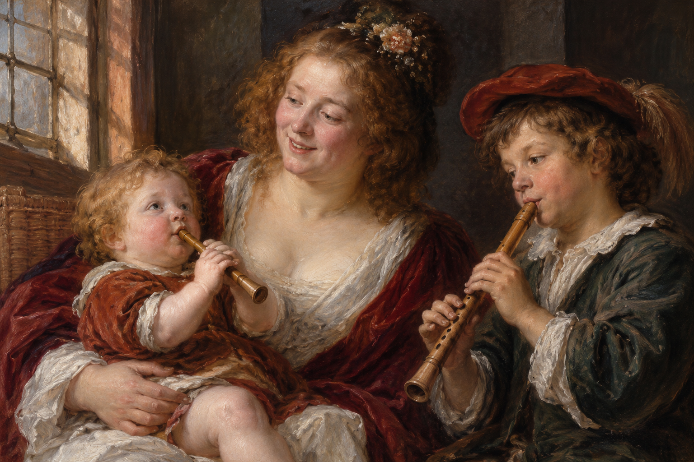

2. oktobar 2026.
Ulaznice u prodajiNew Trinity Baroque & Beogradska barokna akademija
G. F. Händel: Ariodante
Polu-koncertno izvođenjeConcert version
Dani barokne muzike · Novi Sad
2–14. oktobar 2026. · Koncerti, radionica za decu i Novosadska barokna akademija.2–14 October 2026 · Concerts, a children’s workshop and the Novi Sad Baroque Academy.
Izaberite događaj za detaljan program, izvođače i praktične informacije.Choose an event for the full programme, performers and practical information.
2. oktobar 2026.
Ulaznice u prodajiG. F. Händel: Ariodante
Polu-koncertno izvođenjeConcert version

3. oktobar 2026.
Ulaznice u prodajiCanticum Canticorum

7. oktobar 2026.
Ulaznice u prodajiMuzika iz vremena ServantesaMusic from the Time of Cervantes


11. oktobar 2026.
Ulaznice u prodajiAffetti d’amore

12–14. oktobar 2026.
Prijave / više informacijaMeila Tomé • Radoslava Vorgić • Rafael Arjona Ruz • Bojana Dimković • Héctor Hervás